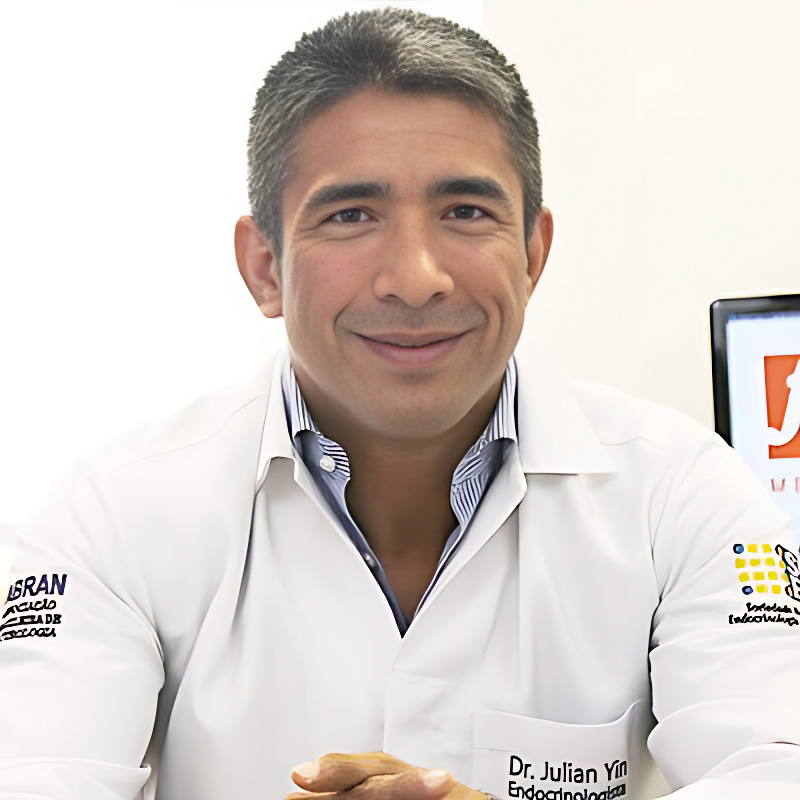

Julian Y. V. Borges, MD, MS
Physician researcher operating at the intersection of clinical medicine, computational biology, and artificial intelligence. Principal investigator of three active research programs spanning governed AI drug discovery, systematic evidence synthesis, and genomic causal inference. Academic affiliation with the Department of Computer Science at Boston University.
- Computational Drug Discovery
- AI Governance
- Mitochondrial Disease
- Translational Science
- Genomic Epidemiology
- Mendelian Randomization
- Evidence Synthesis
- Multi Agent Systems
- Precision Endocrinology
- Clinical Informatics
- Digital Health
- Machine Learning
- Deep Learning
- MCDA
- Systematic Review
- Meta Analysis
- Cardio Endocrinology
Research Output Summary
Active Research Programs
Track 1: Governed AI Drug Discovery (DrugSynth AI / MitoCoreX)
Principal Investigator. Disease agnostic governed multi agent AI drug discovery platform with MitoCoreX as the first validation case targeting genetically defined mitochondrial disease (DRP1, PINK1, Keap1, NDUFV1, SDHA). 67 agent architecture, 11 stage pipeline, 536 tests, 3 completed campaigns. First in class molecule designs include a PINK1 G309D selective activator and a 271 Da BBB penetrant Keap1 disruptor. Platform produces dual outputs per stage: machine readable registries and peer reviewed IMRAD manuscripts. 10 manuscripts completed (8 under journal review), 10 SSRN preprints, 5 ChemRxiv preprints, 10 Zenodo data deposits. USPTO provisional patent 64/018,624.
GeneVector Thesis Track (4 papers): TCDR representation standard, TCDR Engine computational architecture, MitoCoreX case series evaluation, and Evidence Readiness Index for translational gap optimization. Code: github.com/fxmedus/genevector-track
Track 2: Clinical AI Governance and Responsible Deployment
Research on structural failure modes in clinical AI systems, auditability infrastructure, and governance standards for adaptive learning systems. Published the Externally Governed Learning Systems (EGLS) framework (USPTO provisional 63/975,551), multi arm bandit governance for clinical AI (Zenodo), and the AIDD GOV open governance standard for AI driven drug discovery (Apache 2.0). Academic Editor at PLOS Digital Health (36+ reviews). Published in JAMIA Open. 7 SSRN governance preprints with 12,000+ combined views.
Track 3: Evidence Synthesis and Genomic Epidemiology
Iron: Friend or Foe (IronFF): Multi pool systematic review and meta analysis on iron overload and aging related outcomes (10 pools spanning cellular aging, cardiovascular disease, diabetes, neurodegeneration, carcinogenesis, and endocrine outcomes). Pool 7 (Male Hypogonadism) submitted to European Journal of Endocrinology. Pool 6 (Neurodegeneration) submitted to Frontiers in Genetics. PROSPERO registered (CRD420261344877).
CYP19A1 ASD Mendelian Randomization: Two sample MR study using GTEx eQTLs and OpenGWAS data with Bayesian colocalization. Submitted to Frontiers in Genetics. Key finding: CYP19A1 has zero eQTL records across all five GTEx v8 brain tissues examined.
Retatrutide Research Program: Narrative review of triple GIP/GLP1/glucagon receptor agonism for obesity, type 2 diabetes, and MASLD. Three manuscripts authorized (M1 drafted, target: Diabetes, Obesity and Metabolism).
Employment and Academic Appointments
Frontier Translational Research Lab. Computational drug discovery, clinical AI governance, health informatics research.
Digital health, translational research infrastructure, IP portfolio development.
Endocrinology, diabetes, and metabolism.
Endocrinology and clinical nutrition.
Education and Qualifications
- Boston University | MS Health Informatics (Data Analytics) candidate | 2025 to 2027
- Harvard Medical School | Global Clinical Scholars Research Training (GCSRT), Genetic Epidemiology elective | 2024 to 2025
- UC San Diego | Drug discovery, development, and product management | 2025
- Northeastern University | Health informatics for healthcare professionals | 2025
- Johns Hopkins | Clinical informatics specialization | 2025
- Johns Hopkins | Bioinformatics, Python for genomic data science | 2025
- NIH OCRECO | Principles and Practices of Clinical Pharmacology (IPCP) | 2025
- NIH OCRECO | Principles and Practices of Clinical Research (IPCR) | 2024
- HarvardX | AI and ML with R and Python, statistics, Python for research | 2024
- PUC Goias | Medical genetics masters program | 2015 to 2016
- Centro Universitario Serra dos Orgaos | Doctor of Medicine (MD) | 1996 to 2002
- Endocrinology, diabetes and metabolism | Board certification (SBEM/CFM/AMB), distinction | 2014
- Clinical nutrition and nutrology | Board certification (ABRAN/CFM/AMB), distinction | 2013
- Nutrology fellowship | 2012 to 2013
- Endocrinology fellowship | 2011 to 2013
- Medical biochemistry postgraduate program | 2006 to 2008
- Exercise and sports medicine postgraduate program | 2003
- Academic Editor | PLOS Digital Health | 2025 to present
- Editor in Chief | Intl. Journal of Epidemiology and Public Health Research | 2024 to present
Selected Publications and Preprints
ChemRxiv preprints (peer reviewed chemistry server, American Chemical Society)
- ADMET Profiling of a Mitochondria Focused Compound Library (ChemRxiv, 2026). DOI:10.26434/chemrxiv.15001519/v1
- AI Assisted De Novo Design of Small Molecule Candidates Targeting Five Priority Mitochondrial Proteins (ChemRxiv, 2026). DOI:10.26434/chemrxiv.15001592/v1
- Computational Druggability Assessment of Mitochondrial Targets (ChemRxiv, 2026). DOI:10.26434/chemrxiv.15001595/v1
- DrugSynthAI Computational Validation of an AI Governed Multi Agent Drug Discovery Platform (ChemRxiv, 2026). DOI:10.26434/chemrxiv.15001670/v1
- Pan Mitochondrial Privileged Scaffolds: Adenine, Pyridine, and a 7H Purine Bioisostere (ChemRxiv, 2026). DOI:10.26434/chemrxiv.15001671/v1
SSRN working papers and journal submissions
- DrugSynth AI: An AI Pipeline for De Novo Molecule Design Targeting Mitochondrial Defects (SSRN, 2026). SSRN:6493958
- MitoCorex: A Validated AI Pipeline for Precision Drug Design (SSRN, 2026). SSRN:6494079
- Mitochondrial Pathway Architecture: A Systems Level Map of Target Connectivity (SSRN, 2026). SSRN:6493844
- Molecular Consequence Modeling of Mitochondrial Gene Variants (SSRN, 2026). SSRN:6493898
- In Silico Pharmacological Profiling of MitoCorex Candidate Molecules (SSRN, 2026). SSRN:6494058
- The Therapeutic Candidate Decision Record: A Computable Representation and Minimum Information Standard (SSRN, 2026). SSRN:6796779
- Structured Multi Criteria Evaluation of Therapeutic Candidates: MitoCoreX Case Series (SSRN, 2026). SSRN:6796818
- The Evidence Readiness Index: Budget Constrained Optimization for Translational Gap Resolution (SSRN, 2026). SSRN:6796898
Data repositories
- Harvard Dataverse V2: MitoCoreX Compound Library and Validation Data. DOI:10.7910/DVN/WGHUWM
- Zenodo: 10 data deposits (Z01 through Z10) covering pathway maps, compound libraries, defect classifications, engine validation, molecule designs, pharmacological profiles, platform architecture, scaffold analysis, and ADMET baselines.
- Auditing Shortcut Learning and Misclassification in AI Based Breast Cancer Genomic Subtyping (JAMIA Open, 2026). DOI:10.1093/jamiaopen/ooaf177
- Machine Learning Insights for Cardiovascular Risk Prediction in Diabetic Patients (Artificial Intelligence in Health, 2026). DOI:10.36922/AIH025490111
- Multi Arm Bandit Governance for Clinical AI (Zenodo, 2026). DOI:10.5281/zenodo.18248285
- Externally Governed Learning Systems: Adaptive Computation Under Viability Constraints (SSRN, 2026). SSRN:6160268
- Clinical AI as a Sociotechnical System: Structural Failure Modes and Governance Requirements (SSRN, 2026). SSRN:6159427 (186 views, 52 downloads)
- Payer Mediated AI Governance and Reimbursement Driven Algorithm Behavior in US Healthcare (SSRN, 2026). SSRN:6159287
- Auditable AI for Genomic Equity: A Compliance as a Service Model (SSRN, 2026). SSRN:6159546
- Iron Overload and Male Hypogonadism: A Systematic Review of the HPG Axis (SSRN, 2026; submitted EJE). SSRN:6427860
- HFE Genotype and Neurodegeneration: Updated Systematic Review (SSRN, 2026; submitted Frontiers Genetics). SSRN:6427818
- Oral Testosterone Therapy in Hypogonadal Men: Systematic Review and Meta Analysis (2024). DOI:10.1101/2024.09.22.24314162
- Inverse Association between TRT and Cardiovascular Disease Risk: 25 year Review (2024). DOI:10.1101/2024.06.21.24309326
- Challenging the Salt Paradigm: Dietary Sodium Impact on Cardiovascular Risk (SSRN, 2024). SSRN:4984247 (2,547 views)
- CoQ10 as Therapeutic Agent for Cardiovascular Disease (SSRN, 2024). SSRN:4983862 (3,220 views)
- Functional Foods and Nutraceuticals: Definitions and Health Benefits (book, 2025). DOI:10.54448/MSP.978-65-983826-2-9
Complete publication list with 30+ additional works available on ORCID and SSRN Author Page.
Editorial Roles and Peer Review
- Academic Editor, PLOS Digital Health (2025 to present)
- Editorial Board, Intl. Journal of Diabetes and Endocrinology
- Editor in Chief, Intl. Journal of Epidemiology and Public Health Research (2024 to present)
- PLOS Digital Health (36)
- European Journal of Preventive Cardiology (7)
- European Heart Journal Digital Health (2)
- Diabetes and Metabolic Syndrome (2)
- Nature Reviews (1)
- Journal of Advances in Medicine and Medical Research (1)
Intellectual Property Portfolio
- DrugSynth AI: USPTO Provisional Patent Application 64/018,624 (filed 2026 03 27). Governed multi agent pipeline architecture for precision medicine drug discovery.
- Externally Governed Learning Systems (EGLS): USPTO Provisional 63/975,551 (filed 2026 02 04). Structural governance standard for adaptive and learning systems.
- DrugSynth AI Trademark: USPTO Serial 99738691, Class 042, intent to use (filed 2026 04 01).
- AIDD GOV Open Governance Standard: Apache 2.0 open specification for AI driven drug discovery governance. github.com/fxmedus/aidd-gov
Professional Affiliations
- American Medical Informatics Association (AMIA) | Clinical Informatics
- American Medical Association (AMA)
- Endocrine Society
- American Physician Scientists Association (APSA)
- American College of Physicians (ACP)
- American Society for Nutrition (ASN)
- American College of Sports Medicine (ACSM)
- Brazilian Society of Endocrinology and Metabolism (SBEM)
- Brazilian Medical Nutrition Association (ABRAN)
Methods and Computational Tooling
Contact and Collaboration
Academic email: jyborges@bu.edu
Research correspondence: fxmedbrasil@gmail.com
Available for research collaboration, advisory roles, peer review assignments, and academic partnerships in computational drug discovery, clinical AI governance, and translational endocrinology. Inquiries regarding the DrugSynth AI platform, MitoCoreX pipeline, or AIDD GOV governance standard are welcome.